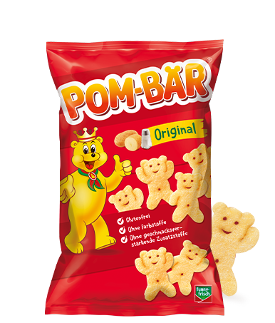
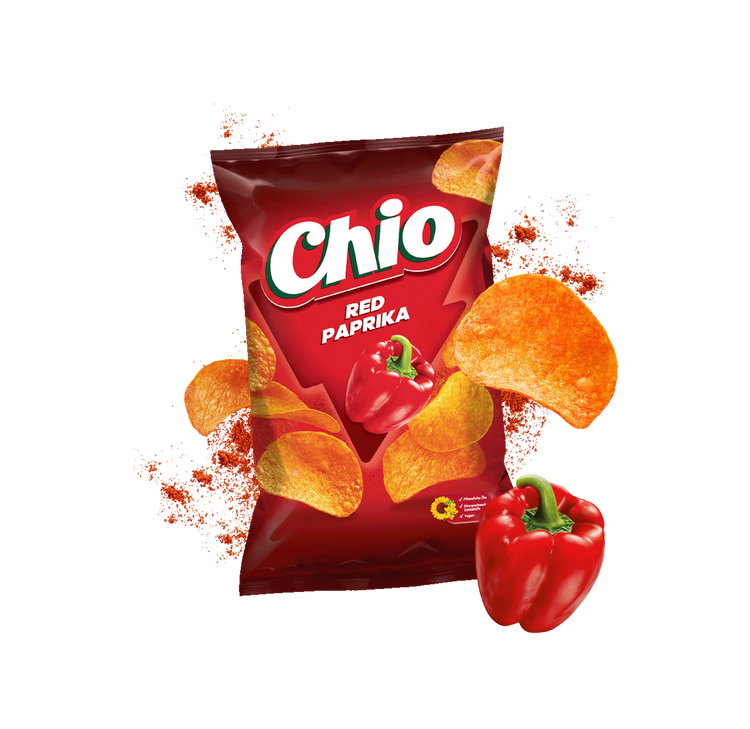
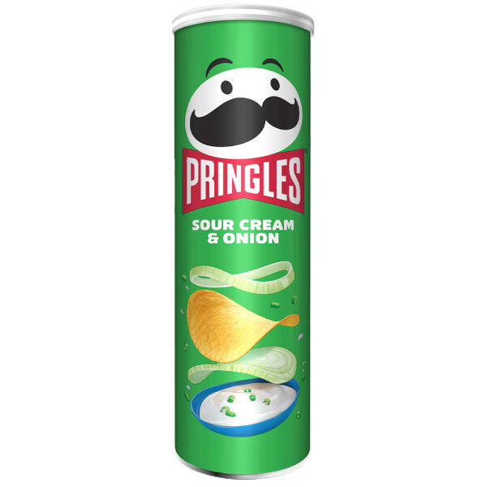

Den Bezirk eigenständig entwickeln.
Ich plane Marktbesuche nach Potenzial, Handlungsbedarf und Entfernung. Jeder Besuch hat ein konkretes Ziel; Vereinbarungen und nächste Schritte verfolge ich konsequent nach.
25+ Jahre FMCG-Vertrieb.
12 Jahre direkt am POS.
Und Lust auf das, was als Nächstes kommt.

Sie suchen jemanden, der seinen Bezirk eigenständig entwickelt, Händler mit Zahlen überzeugt und Marken am POS sichtbar macht. Genau darin liegt meine Erfahrung.
Ich plane Marktbesuche nach Potenzial, Handlungsbedarf und Entfernung. Jeder Besuch hat ein konkretes Ziel; Vereinbarungen und nächste Schritte verfolge ich konsequent nach.
Category Management, Nielsen/GfK und Handelsbetreuung gehören zu meiner Berufspraxis. Ich verbinde die wirtschaftliche Sicht des Händlers mit konkreten Maßnahmen im Markt.
Beim Launch von Lenor Unstoppables erreichte ich 90 % Distribution in zwei Wochen. Dafür waren vier Wochen vorgesehen. Neue Produkte in die Märkte zu bringen, kenne ich aus eigener Umsetzung.
Ob Ariel, Lenor, Gillette oder Oral-B: Ich habe Platzierungen vereinbart und am POS umgesetzt. Reale Beispiele sehen Sie im nächsten Abschnitt.
Ich bereite Gespräche sorgfältig vor, mache den Nutzen einer Aktion konkret und halte Zusagen nach. Bei einer LKW-Aktion erreichte ich 250 % des vorgegebenen Ziels.
Ich habe mit P&G-eigenen Retail-Systemen gearbeitet. 2026 habe ich meine Erfahrung um drei IHK-Zertifikate in Digital Sales, CRM und KI im Vertrieb ergänzt.
Ich habe Märkte in Frankfurt, Eschborn, Wiesbaden, Mainz und Darmstadt betreut. Zu meiner Gebietserfahrung gehört außerdem der Raum zwischen Mannheim und dem Saarland.
Händler gewinnen, Zweitflächen sichern, Aktionen umsetzen: Diese POS-Erfahrung bringe ich für Lorenz mit – ergänzt durch meine Betreuung von Pringles und Wick-Bonbons.
Aktionsaufbau auf zusätzlicher Verkaufsfläche.
Ich gewinne zusätzliche Flächen und setze aufmerksamkeitsstarke Aktionen im Markt um.
250 % Zielerreichung bei einer LKW-Aktion.
Ich wähle passende Handelspartner aus, mache den Aktionsnutzen konkret und verfolge Vereinbarungen konsequent nach.
Markenplatzierung im Handel.
Ich prüfe Platzierung und Verfügbarkeit und packe bei der Umsetzung im Markt mit an.
Gondelkopf zur Produkteinführung.
Ich plane Marktbesuche mit konkreten Zielen und leite aus Potenzial und Handlungsbedarf die nächsten Maßnahmen ab.
Bei Pringles, Wick-Bonbons und auch Blend-a-med-Zahncreme habe ich mich mit der MHD-Thematik beschäftigt. Ich kenne damit neben Platzierung und Verfügbarkeit auch die Herausforderungen begrenzter Haltbarkeit im Handel – eine Erfahrung, die ich in die Betreuung der Lorenz-Marken einbringen möchte.
Ich bin 54. Ich bringe mehr als 25 Jahre FMCG-Vertrieb mit – und habe mich 2026 noch einmal gezielt weitergebildet.
Im Handel habe ich gelernt, zuzuhören, Einwände einzuordnen und Vereinbarungen verlässlich umzusetzen. Ich kenne den Druck im Markt und die Bedeutung einer Lösung, die auch für den Händler wirtschaftlich funktioniert.
Diese Erfahrung möchte ich bei Lorenz einbringen. Gleichzeitig arbeite ich mich in neue Systeme und Arbeitsweisen ein. Dafür stehen auch meine aktuellen Abschlüsse.
Die Kombination aus Handelskenntnis, Umsetzungspraxis und Lernbereitschaft ist mein Beitrag zu Ihrem Vertrieb.
Mit Pom-Bär begann mein Weg im FMCG-Vertrieb. Bei Intersnack vertrieb ich Chio Chips international. Bei P&G betreute ich Pringles und Wick-Bonbons. Bei Lorenz möchte ich diese Verbindung weiterführen: starke Snack-Marken, nah am Handel und mit eigener Verantwortung für den Bezirk.

Meine ersten Erfahrungen
im FMCG-Vertrieb.

Internationaler Vertrieb
bei Intersnack.

Pringles und Wick-Bonbons
in meiner Betreuung bei P&G.
Meine Erfahrung für Ihren
Bezirk im Großraum Frankfurt.
Zurück zu den Snacks.
Mit 25+ Jahren Erfahrung mehr.
Meine Vertriebslaufbahn führte mich von Wolf Bergstraße und Intersnack zu Procter & Gamble. Dort war ich 23 Jahre tätig, unter anderem als Field Account Manager sowie in Category Management und Market Planning.
Meine Erfahrung im Lebensmittelhandel und Cash & Carry passt direkt zur Betreuung Ihrer Handelspartner. Zwölf Jahre war ich als Field Account Manager im Außendienst tätig – unmittelbar in den Märkten und am POS.
Meinen vollständigen Lebenslauf finden Sie in meinen Bewerbungsunterlagen. Einzelne Stationen und Erfolge erläutere ich gern persönlich.
Ich möchte Lorenz im Großraum Frankfurt im Handel voranbringen. Lassen Sie uns darüber sprechen, wie ich meine Erfahrung und Ideen in Ihren Bezirk einbringen kann.
Marc Webersdorfer · Sofort verfügbar · Rhein-Main